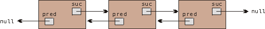
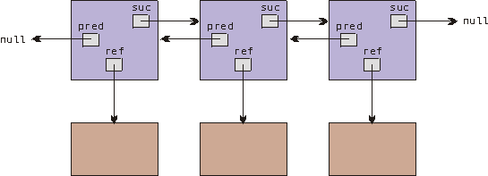

jlist.
Först skall vi dock diskutera
get...- och set...-operationer, något som
är så vanligt att det kan kallas ett mönster (pattern). I veckans
övning, och i inlämningsuppgift 2 skall ni använda detta mönster, mer om det på
föreläsningen.
I vissa sammanhang kan vi dock låta våra attribut vara publika, i exemplen nedan gör vi det för att göra programkoden kortare - ofta gör man det bara med klasser som inte skall användas av andra programmerare.
int[] v = new int[100];
int n = 0;
int nbr = Keyboard.readInt();
while (nbr > 0) {
v[n++] = nbr;
nbr = Keyboard.readInt();
}
for (int i = n-1; i >= 0; i--) {
System.out.println(v[i]);
}
(Här har vi utnyttjat en standardkonstruktion för insättning i vektorn,
v[n++] = nbr, vi ökar värdet på n på samma rad som vi
lägger in värden. Uppdateringen av n sker inte förrän efter att
satsen exekverats - hade n uppdaterats innan satsen exekverats hade
vi aldrig lagrat något värde i index 0.)
Vi har stött på två problem med vektorer:
Vi inför följande klass:
class IntElement {
public int value;
public IntElement next;
public IntElement(int value) {
this.value = value;
this.next = null;
}
}
I denna klass har jag av bekvämlighetsskäl låtit attributen vara publika,
se ovan.
Objekt av klassen IntElement innehåller ett heltalsvärde, och en
referens till ett annat IntElement-objekt. Vi kan på så vis låta
varje IntElement hålla reda på sin egen efterföljare, vilket
innebär att vi kan binda ihop ett antal IntElement i en lista (i
omvänd ordning!) på följande sätt:
IntElement list = null;
int nbr = Keyboard.readInt();
while (nbr > 0) {
IntElement e = new IntElement(nbr);
e.next = list; // låt efterföljaren till det nya elementet
// vara det element som tidigare var listans
// första element
list = e; // listans första element är nu e
nbr = Keyboard.readInt();
}
IntElement e = list;
while (e != null) {
System.out.println(e.value);
e = e.next;
}
Om vi läser in talen 1 2 3 får vi följande lista:
I denna lösning stoppar vi upprepade gånger in ett element först i listan, att göra samma sak med en vektor skulle bli väldigt klumpigt eftersom alla element måste flyttas ner ett steg:
int[] v = new int[100];
int n = 0;
int nbr = Keyboard.readInt();
while (nbr > 0) {
for (int i = n; i > 0; i--) { // här flyttar vi ner
v[i] = v[i-1]; // elementen ett steg
}
v[0] = nbr; // och stoppar in det nya
n++; // elementet först i vektorn
nbr = Keyboard.readInt();
}
for (int i = 0; i < n; i++) {
System.out.println(v[i]);
}
Listor är i detta exempel smidigare än vektorer på flera sätt, vi behöver
inte i förväg skapa utrymme för ett bestämt antal element, och det är enkelt att
infoga element före andra element i listan.
Det finns naturligtvis även nackdelar med listor, exempelvis:
IntElement (om listan är tom från början skall
elementet läggas in först).

Många operationer blir enklare att implementera med dubbellänkade listor eftersom vi alltid kan stega tillbaks ett eller flera steg.
Man skiljer även mellan listor med huvud (listor som har ett särskilt element för att hålla reda på listan i sin helhet) och listor utan huvud.
Man kan även klassificera listpaket på andra sätt:

Bland poängerna med den senare typen av lista kan nämnas att elementen slipper att släpa med sig referenser till föregångare och efterföljare själva, och att de dessutom kan ligga i flera olika listor samtidigt (det finns fler fördelar med denna typ av lista).
jlistse.lth.cs.jlist, som är inspirerat av ett klassiskt listpaket,
simset, som fanns som standardpaket i det första objektorienterade
programspråket - Simula. Ett av de huvudsakliga användningsområdena för Simula
var från början olika typer av simulering, och man behövde sätt att lägga
simulerade objekt i listor, därav Simset.
Paketet jlist, liksom Simset, beskriver dubbellänkade listor
med huvud enligt figuren nedan:

Paketet exporterar två klasser:
Head, som beskriver ett listhuvud (specifikation),
och
Link, som beskriver ett listelement (specifikation).
Head-objekt och ett antal (0 eller
flera) Link-objekt. De vanligaste list-operationerna fungerar på
följande sätt:
Vi skapar en tom lista genom att skapa ett nytt Head-objekt:
Head list = new Head();
Listelementen skapas som vanligt med new-anrop:
Link element = new Link();
och de stoppas in sist i en lista med hjälp av
into(Head)-operationen: element.into(list);
Lägg märke till att operationen för att lägga ett element i en
lista alltså är en operation på elementet, inte på listan! En anledning till
detta är att det annars hade varit knepigt att infoga ett element inne i
listan.
Ofta lägger man in sina element i en lista samtidigt som man skapar dem:
new Link().into(list);
Första elementet i en lista håller listhuvudet reda på, i klassen
Head finns en operation first():
element = list.first();
För att få efterföljaren till ett element använder vi operationen
suc() i klassen Link:
Link nextElement = element.suc();
När element är listans sista element returneras
null när vi anropar suc().
För att få föregångaren till ett element använder vi operationen
pred() i klassen Link:
Link previousElement = element.pred();
När element är listans första element returneras
null när vi anropar pred().
För att gå igenom en lista från första till sista element kan vi skriva:
Link e = list.first();
while (e != null) {
// gör något med elementet e
e = e.suc();
}
Detta idiom kommer vi att använda många gånger i kursen. jlistLink är i sig rätt oanvändbar, den innehåller inga intressanta
attribut eller operationer (förutom referenser till föregångare och
efterföljare). Man måste därför ärva klassen Link för att få något
intressant:

Exempel: Vi vill använda listor istället för vektorer när vi skall
lagra våra konton i övning 16 (Bankomat-övningen). Eftersom våra konton skall
bli listelement låter vi dem ärva klassen Link:
class Account extends Link {
private int
accountNo,
amount;
/**
* Skapar ett konto med givet kontonummer.
*
* @param accountNo Kontonummer.
*/
public Account(int accountNo) {
super();
// implementation som i övning 16
}
/**
* Ger kontonumret.
*
* @return Kontonumret.
*/
public int getAccountNo() {
// implementation som i övning 16
}
/**
* Ger saldot på kontot.
*
* @return Saldot på kontot.
*/
public int getBalance() {
// implementation som i övning 16
}
/**
* Sätter in ett givet belopp på kontot.
*
* @param amount Det belopp vi vill sätta in.
*/
public void deposit(int amount) {
// implementation som i övning 16
}
/**
* Tar ut ett givet belopp från kontot.
*
* @param amount Det belopp vi vill ta ut.
*/
public void withdraw(int amount) {
// implementation som i övning 16
}
}
Vi kan skriva klassen Account precis som vi gjort tidigare,
med det lilla tillägget att vi utökar klassen Link (extends
Link på första raden), samt att vi anropar faderklassens konstruktor,
super(), i konstruktorn.
Konton kan nu läggas i en lista (Head) på följande sätt:
Head accountList = new Head(); // skapar tom lista
for (int accountNo = 100; accountNo <= 1000; accountNo += 100) {
new Account(accountNo).into(accountList);
}
Ett litet problem (eller snarare irritationsmoment) som uppstår när man
ärver ner klassen Link är att man måste kvalificera om referenser
på många ställen. Eftersom operationerna first() i klassen
Head och suc() i klassen Link båda har
den statiska kvalifikationen Link så kommer vi att tvingas typa när
vi använder dessa operationer. För att skriva ut saldot på samtliga konton
skulle vi få skriva: Account acc = (Account) accountList.first();
while (acc != null) {
writer.println("Konto nummer: " + acc.getAccountNo() +
" har saldot " + acc.getBalance());
acc = (Account) acc.suc();
}
Vi diskuterade reglerna för kvalifikation häromveckan, en referensvariabel
får referera till "objekt av den egna klassen och subklasser till den",
men inte till klasser ovanför i klasshierarkin (klassen Link är ju
faderklass till Account) - det är därför vi måste "typa om".
Head, exempelvis ville vi i Bank-uppgiften kunna söka efter ett
konto med givet kontonummer, denna operation hade lämpligen kunnat lägga i
list-klassen. Dessutom kan vi här lägga operationer för att undersöka om ett
givet kontonummer finns, samt operationer för saldobesked, insättning och uttag.
Innan vi implementerar klassen AccountList några ord om sökning:
Vi har tidigare i kursen sökt i vektorer, att söka efter ett heltalsvärde
value i en heltalsvektor v med n element
gjorde vi på följande sätt:
int pos = 0; // första index
while (pos < n && v[pos] != value) {
pos++;
}
Motsvarande konstruktion för sökning efter kontonummer
accountNo i en kontolista accountList blir: Account account = (Account) accountList.first(); // första element
while (account != null && account.getAccountNo() != accountNo) {
account = (Account) account.suc();
}
I båda fallen börjar vi på det första elementet, kontrollerar i varje steg
att vi fortfarande befinner oss i vektorn respektive listan, och stegar vidare
om vi inte hittat det sökta värdet.
Vi kan nu implementera klassen AccountList, i implementationen
nedan har vi ingen lista accountList, istället söker vi i
this (eftersom this är den kontolista vi söker i), det
första elementet blir därför this.first():
class AccountList extends Head {
/**
* Skapar en tom kontolista.
*/
public AccountList() {
super();
}
/**
* Letar upp ett konto med givet kontonummer.
*
* @param accountNo Det kontonummer vi söker.
* @return Kontot med det givna kontonumret, null om
* inget sådant konto finns.
*/
private Account find(int accountNo) {
Account account = (Account) this.first();
while (account != null && account.getAccountNo() != accountNo) {
account = (Account) account.suc();
}
return account;
}
/**
* Avgör om ett konto med givet kontonummer finns.
*
* @param accountNo Kontonummer.
* @return
*/
public boolean exists(int accountNo) {
return this.find(accountNo) != null;
}
/**
* Ger innestående belopp på ett konto med givet kontonummer,
* förutsätter att kontot verkligen finns.
*
* @param accountNo Kontonummer
*/
public void getBalance(int accountNo) {
return this.find(accountNo).getBalance();
}
/**
* Sätter in belopp på konto med givet kontonummer, förutsätter
* att kontot verkligen finns.
*
* @param accountNo Kontonummer.
* @param amount Belopp som skall sättas in.
*/
public void deposit(int accountNo, int amount) {
this.find(accountNo).deposit(amount);
}
/**
* Tar ut givet belopp från konto med givet kontonummer,
* förutsätter att kontot verkligen finns.
*
* @param accountNo Kontonummer.
* @param amount Belopp som skall tas ut.
*/
public void withdraw(int accountNo, int amount) {
this.find(accountNo).withdraw(amount);
}
}
IntList och IntElement för
att lagra heltal i en lista. Klasserna skall ha följande specifikationer: class IntElement ... {
public IntElement(int nbr);
public void setValue(int nbr);
public int getValue();
}
class IntList ... {
public int nbrOfOddValues();
}
där nbrOfOddValues() i klassen IntList
skall returnera antalet udda värden i listan.